로그인 상태에서 주요 기능 점검
2026년 10월 13일 연결된 실기기의 기존 설치본으로 기능을 직접 조작했다. 사용자가 Google 로그인을 완료한 상태에서 시작했고, 로그아웃은 수행하지 않았다.
실행 결과
| 기능 | 실기기에서 확인한 동작 | 판정 |
|---|---|---|
| 회원 세션 | 로그인된 My Page를 확인했다. 앱 강제 종료 후 재실행해도 로그인과 회원 답변이 유지됐다. | 통과 |
| Home 문구·날짜 | 10월 13일과 11일 문구 이동, 한국어·영어 전환을 확인했다. | 통과 |
| Home 답변 | 10월 13일 답변 기록→수정→앱 재실행 후 유지, 10월 11일 캘린더 답변의 Home 동기화를 확인했다. | 통과 |
| 회원 필사 저장 | 10월 11일 영어 원문 전체 입력 후 저장했다. 완료 팝업과 Home 복귀, 캘린더 완료 건수 2→3을 확인했다. | 통과 |
| 미완료 필사 | 10월 13일 빈 입력으로 저장했을 때 미완료 안내가 떴다. ‘필사하기’와 ‘취소’ 모두 입력 화면으로 돌아왔다. 서버 완료 기록은 생성하지 않았다. | 통과 |
| 저자 링크 | Home에서 한국어 저자명 ‘플로렌스 나이팅게일’을 누르면 Chrome의 영어 위키백과로 이동하지만, 해당 문서는 존재하지 않는다는 안내가 나온다. | 결함 |
| 캘린더 | 완료·좋아요 표시, 날짜 선택, 질문·문구·답변을 확인했다. 10월 11일 좋아요는 켰다가 해제해 건수 1→0을 확인했다. | 통과 |
| 기록 목록·필터 | 전체 목록, 좋아요만 보기, 10월 11~13일 날짜 범위 적용과 해당 기록 표시를 확인했다. | 통과 |
| 메모 | 10월 11일 메모 입력 후 목록에 메모 표기가 생겼고, 앱 재실행 뒤 상세에 본문이 남았다. | 통과 |
| 공유 | 배경 선택 화면에서 이미지 저장·복사 성공 메시지와 Android 공유 시트 진입을 확인했다. 외부 앱의 전송 버튼은 누르지 않았다. | 통과 |
| 이미지 등록 | QA 전용 체크 패턴 이미지를 사진 선택기에서 골라 등록했다. ‘이미지 보기’에 반영된 뒤 삭제까지 확인했다. | 통과 |
| My Page | 공지 3건의 목록·상세, 알림 켜기/끄기와 재진입 후 상태 유지, 라이트·다크·시스템 테마 적용을 확인했다. | 통과 |
| 회원 위젯 | 실기기 런처의 2×2 위젯에서 오늘 문구를 확인했다. 탭으로 앱 실행, 영어 전환과 큰 글자 적용을 확인했다. | 통과 |
추적할 현상 1: Home 완료 표시 갱신 지연
10월 11일 필사를 완료한 직후 Home 주간 날짜에는 불꽃 표시가 없었다. 같은 시점 캘린더에는 완료 표시와 완료 건수 3이 보였다. 첫 앱 재실행 후에도 Home 표시가 빠졌지만, 이후 앱을 다시 열었을 때 표시됐다. 현재는 표시가 일치한다.
서버 반영 시간과 Home 주간 데이터 갱신 조건 중 어느 쪽이 원인인지는 이번 관찰만으로 확정할 수 없다. 다음 신규 완료 건에서 저장 직후·화면 왕복·재실행 시각별로 다시 재현해야 한다.
- 19:25 전후10월 11일 필사 완료, 캘린더는 불꽃 3건 표시
- 19:37앱 재실행 후 Home 11일 불꽃 없음
- 19:54이후 앱 진입 시 Home 11일 불꽃 표시
결함 2: 한국어 저자 링크가 없는 문서로 이동
10월 13일 Home의 저자 아이콘을 누르면 브라우저에서 en.wikipedia.org/wiki/플로렌스_나이팅게일 경로가 열리고 “Wikipedia does not have an article with this exact name”이 표시된다.
앱의 getWikipediaUriString은 화면에 표시한 저자 이름을 https://wikipedia.org/wiki/ 뒤에 붙인다. 브라우저에서 영어 위키백과로 이동한 결과와 맞는다. 해당 문구 데이터가 가진 저자 URL의 값과 다른 저자명에서의 재현 범위는 아직 확인하지 않았다.
아직 확인하지 않은 조건
- Google 로그인 요청과 토큰 발급 본문, device UUID: 이미 로그인된 기기에서 시작해 로그인 과정을 다시 실행하지 않았다.
- 토큰 만료 후 자동 재발급 및 장시간 사용: 이번 실기기 조작 시간 안에는 만료 상황이 오지 않았다.
- 오전 9시 실제 알림 수신, 알림 권한 거부·재허용, 위젯의 다음 날 자동 갱신.
- 위젯 4×2 실물 크기, 네트워크 오류·서버 실패·오프라인 복구, 모든 공유 배경별 저장.
- 외부 메신저 최종 전송, 계정 탈퇴, 로그아웃. 로그아웃은 사용자 요청에 따라 제외했다.
- Figma와의 시각적 일치 여부는 이번 기능 QA의 판정 대상이 아니다.
테스트 후 계정·기기 상태
계정에 남은 QA 데이터: 10월 11일 필사 완료, 10월 13일 답변 QA_check_2026-10-13_edited, 10월 11일 답변 QA_calendar_2026-10-11, 10월 11일 메모 QA_memo_2026-10-11. 이 앱의 API 주소는 api.fillsa.com이므로 실제 계정 기록이다.
복원한 상태: 10월 11일 좋아요 해제, 알림 켜짐, 라이트 테마, 위젯 설정의 한국어·중간 글자 크기. 등록한 QA 사진은 앱에서 삭제했고, 테스트용 런처 위젯·기기 사진·공유 저장 이미지는 제거했다. 로그인은 유지했다.
테스트 중 광고 SDK의 안내 팝업이 하단 탭을 가렸다. 팝업을 닫은 뒤 해당 동작을 다시 수행했다. 이 팝업을 앱 기능 실패로 분류하지 않았다.
화면 증거
개인 프로필과 기존 계정 사진이 들어간 화면, 인증 토큰과 원본 로그는 보고서에 넣지 않았다. 이미지를 누르면 원본 크기로 볼 수 있다.

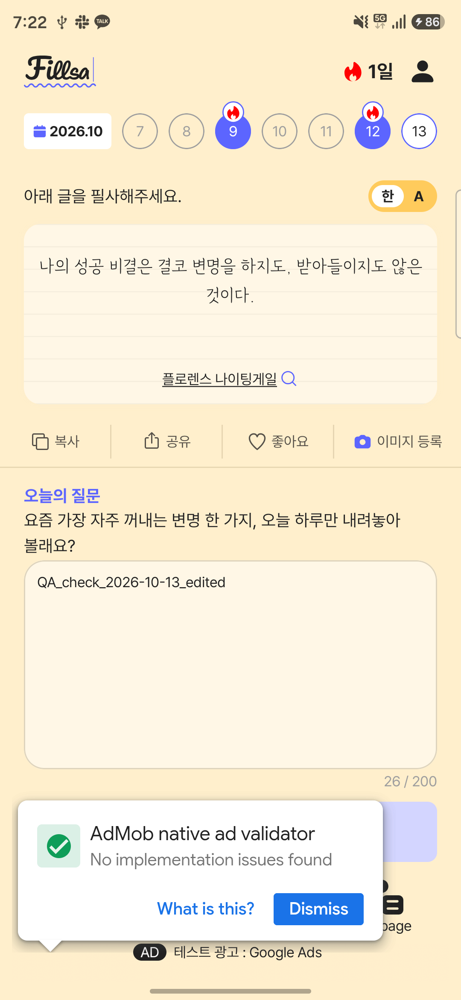

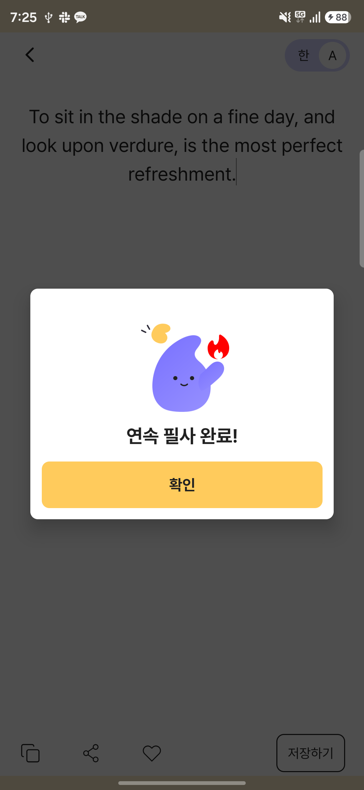

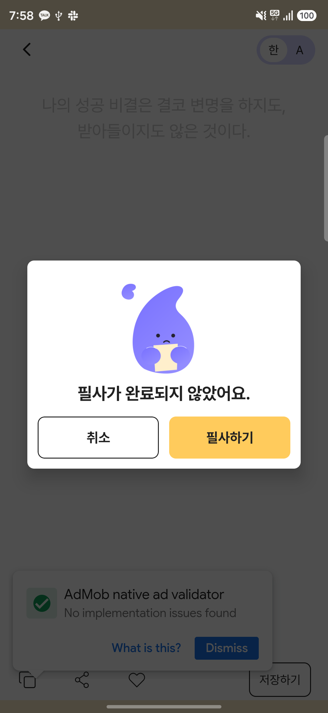

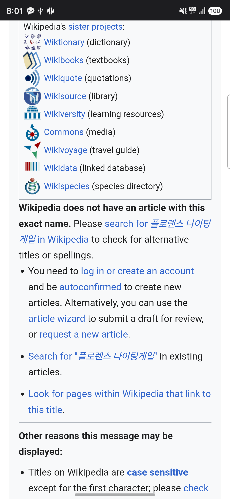

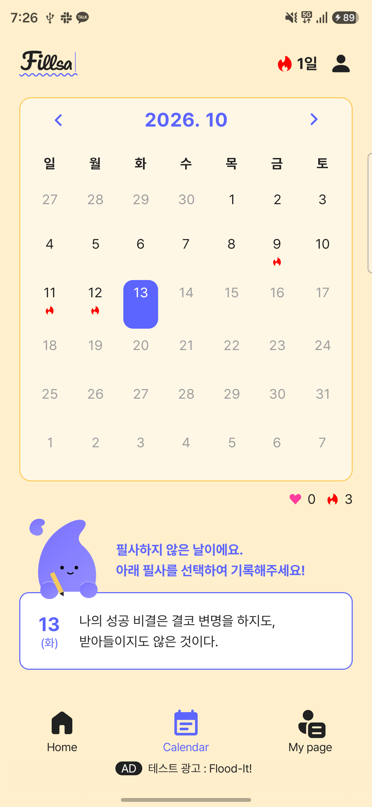

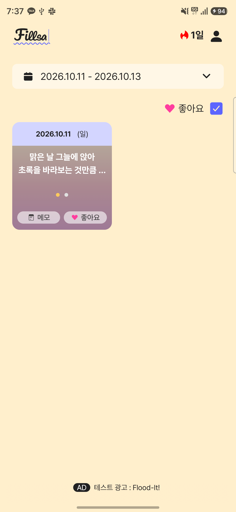

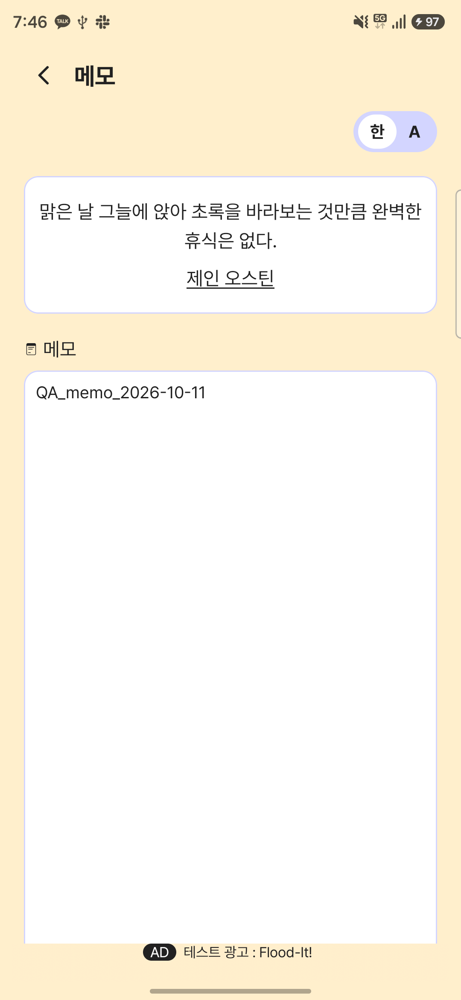

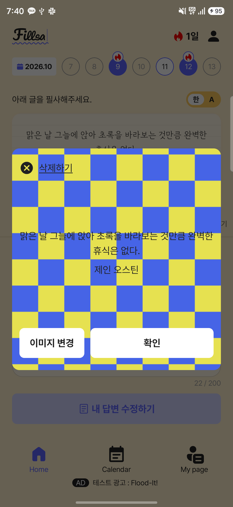

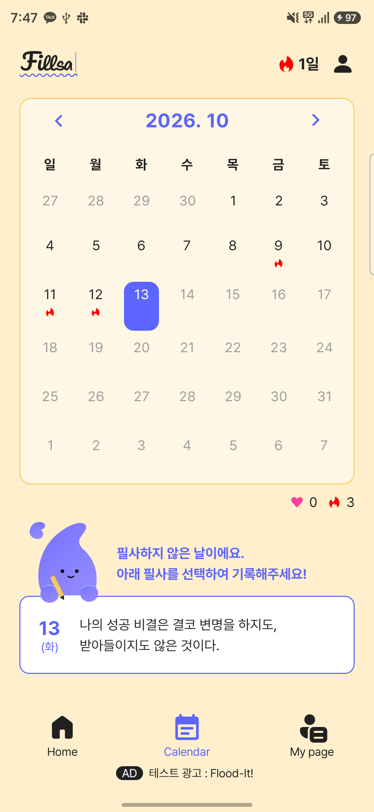

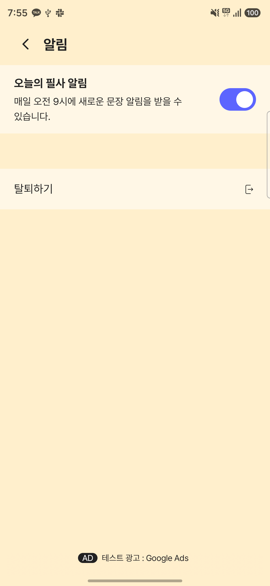

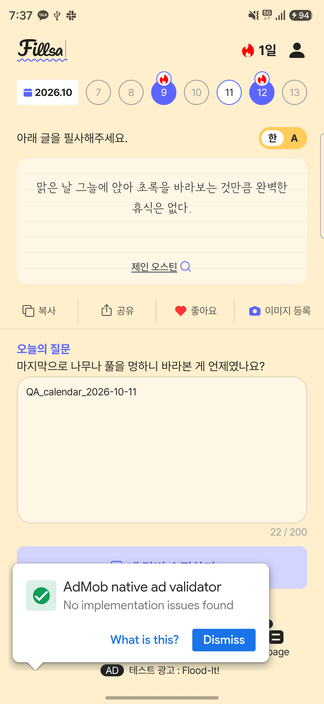

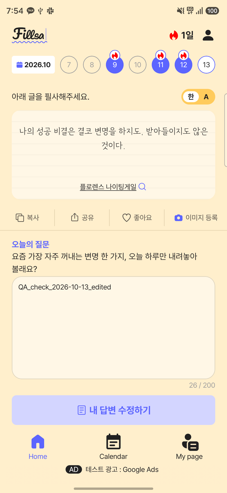